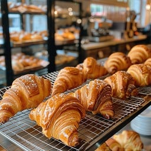

Croissant

The croissant, a crescent-shaped pastry, is a beloved breakfast staple and a symbol of French culinary culture. It's made from a yeast-leavened, laminated dough that's folded and rolled numerous times, creating hundreds of thin, buttery layers. The resulting pastry is crisp on the outside and soft and flaky on the inside. Croissants are often enjoyed plain, but they can also be filled with sweet or savory ingredients like chocolate, ham, or cheese.
Creme Brelee
 Crème brûlée, a classic French dessert, consists of a rich custard base topped with a layer of hard caramel. The custard is typically made from cream, egg yolks, and sugar, and is flavored with vanilla or other ingredients. The top layer is caramelized using a torch or broiler, creating a contrast between the creamy custard and the crunchy caramel. It's often served in individual ramekins and is known for its elegant presentation.
Crème brûlée, a classic French dessert, consists of a rich custard base topped with a layer of hard caramel. The custard is typically made from cream, egg yolks, and sugar, and is flavored with vanilla or other ingredients. The top layer is caramelized using a torch or broiler, creating a contrast between the creamy custard and the crunchy caramel. It's often served in individual ramekins and is known for its elegant presentation.